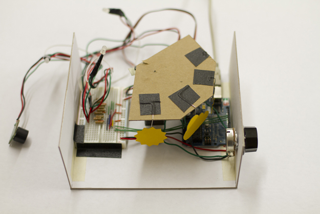
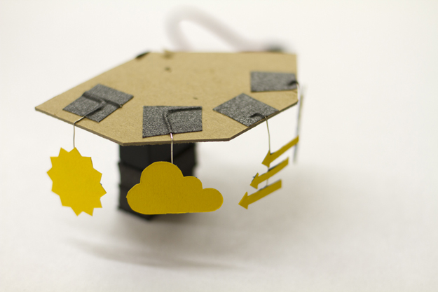
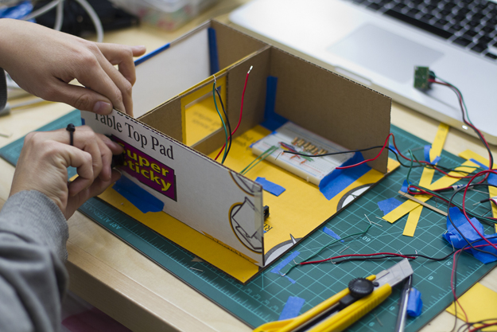

MFA IXD
Weather Light
A prototype for an object that lives in the home, shedding light on what to wear when you leave.
Weather Light began as an exploration into how people behave when lighting responds to their movement in a space. After various non-utilitarian experiments it evolved to perform a more functional role. The final prototype provides today’s weather where you need it most, next to your front door.
Weather Light connects to the Internet, giving you upto the minute weather information. Users can change the time period they’re viewing using a dial on the side of the box, showing the weather upto 10 hours from now (the length of a typical work day + commute time). 3 x RGB LEDs change color to indicate the temperature outside while the cardboard symbol reflects the weather conditions.
Early iterations included a motion sensor which switched the box from passive to active mode i.e. it was purely an ambient light until someone approached the front door.
This was a 6-week collaboration with Tash Wong as part of Rob Faludi‘s Physical Computing class.
Thumbnail photo credit: Garry Knight